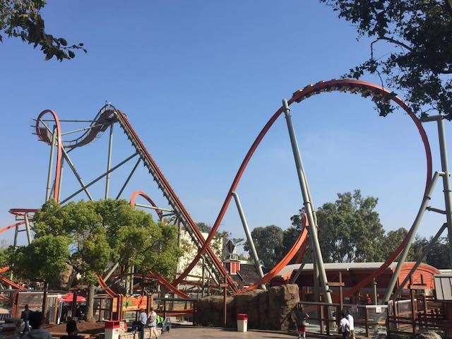
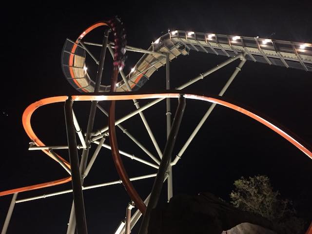
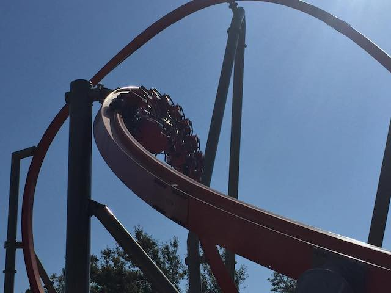
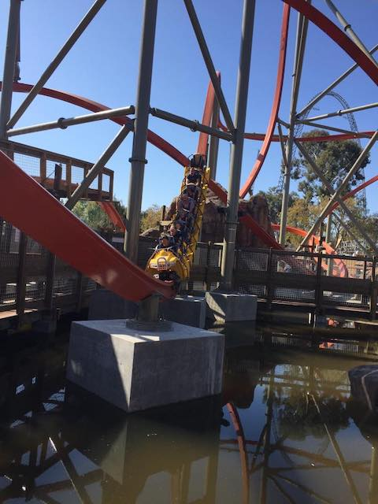
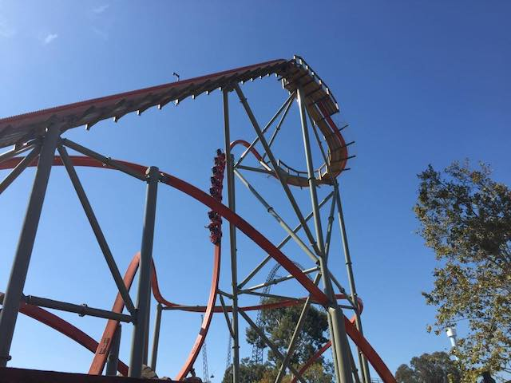
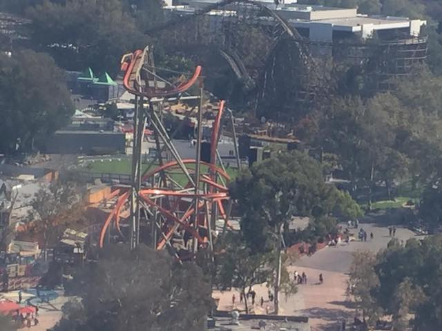
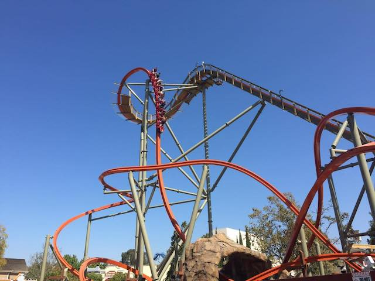

| |
Railblazer Review

Today at Incrediblecoasters, we're going to be reviewing Railblazer at California's Great America. This is one of the first RMC Raptors. They just started popping up this year, and I really hope these become a new Batman: the Ride or Premier Sky Rocket, because...MAN!!! These rides are SO GOOD!!! But we'll worry about that for the future. Let's just get in the cars (Yeah. You're sitting by yourself due to the fact that it's a single rail), pull down the restraints (these resteraints are weird. They feel more like a figher pilot seatbelt), and we're off. We begin to climb the lifthill. There's not much of a view here, but hey. We're now at the top, and then we dip down, go around a turn, and then go down the first drop. It's a vertical drop, so you just drop on down, and because its a vertical drop, you get some good airtime. Especially in the back. And of course, you get some good speed. And let me tell you. Once this ride gets going, it's not gonna stop. We go through a brief rock tunnel. So that's cool. Happy that Railblazer has some theming. We then go through the Immelmann. Though this one feels different from other Immelmanns. This one just feels like you're going up a big hill, flipping at the top, and looping back down to the ground. It just feels quicker than most other Immelmanns. So that's good. We then go through this sort of wave hill. We just whip through this thing, and amazingly, it doesn't even feel like we're losing speed. It's kind of like Millenium Force in that regard, except it's better and more forceful. And hey. We've got some airtime on this hill. So that's really good. We then go through this curved hill. There's actually a couple laterals here, so that's really cool. We then go around a turn, and this seems to be the one breather part of the ride. But it's very quick, and then we go down yet another vertical drop. Wee! Airtime! We then go through a cutback (Man, those things are really starting to catch on in popularity), which is really cool. We then go through the corkscrew. And...it's hard to describe this. The best way to describe the feel of this ride, is that it's riding a whip. Because on the one hand, it's smooth as glass. Everything is crystal smooth. But at the same time, this ride has some WHIP!!! You slide around as you go through all these curves and inversions. So that gives Railblazer a really fast, twisty, smooth ride. So you just get some good whip as you just snap through this corkscrew. We then go through this low to the ground banked turn, that yeah. That smooth whip is here too. So you slide around as you get some laterals. Pop out of that, up a hill, get a little airtime, and into the brake run. So yeah. There you go. That's Railblazer. These RMC Raptors are great! They're small, compact, and REALLY good. I really hope that these things start popping up in the future. Cause they're amazing. Give this a ride if you're at California's Great America.
9/10
Location: California's Great America
Opened: 2018
Built by: Rocky Mountain Coasters
Last Ridden: September 22, 2018
Railblazer Photos








Home
|